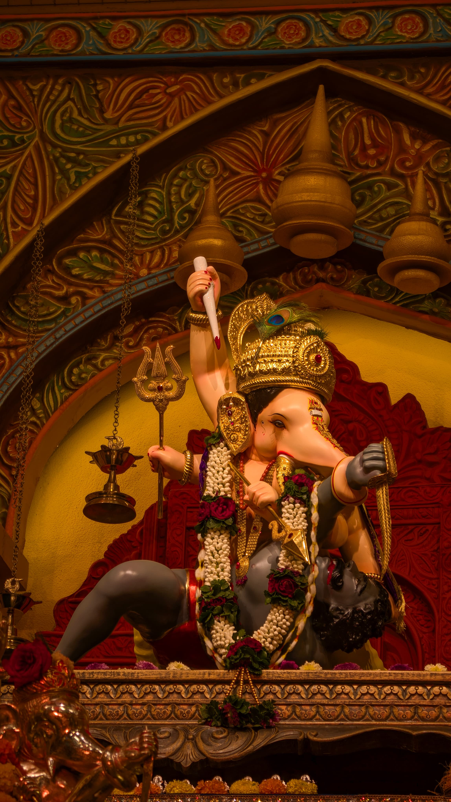
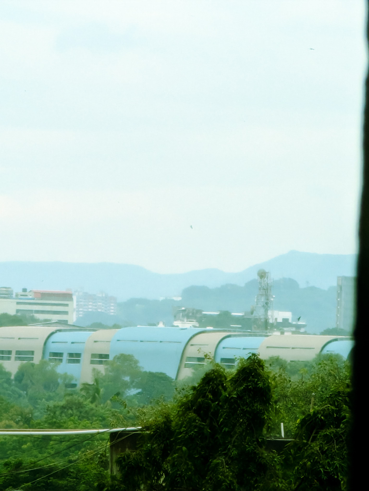
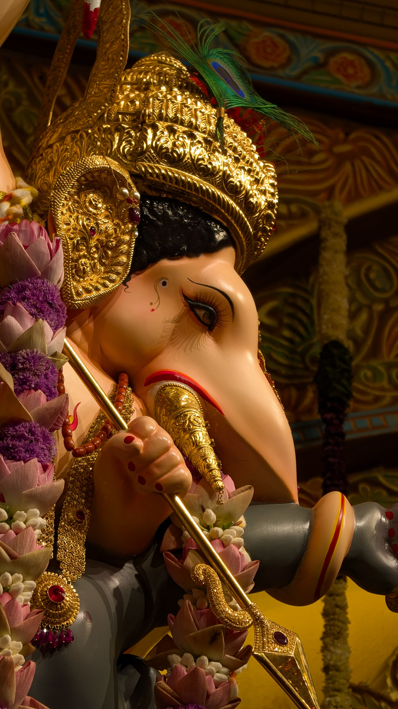

What I love most about this shot is the way it shows the temple in all its glory, yet also feels intimate. It's like you're right there, feeling the warmth of the sunlight, hearing the sounds of the devotees, and taking in the history with each step. A place like this doesn't just look beautiful — it makes you feel something deep inside.

Caught this shot from the office one day, just looking out the window. Sometimes, amidst all the hustle, you notice moments like these—where the sky is so calm and quiet, almost as if it's taking a break too. It’s one of those photos that reminds you to breathe and appreciate the little peaceful moments, even during a busy workday.
A tranquil scene of endless blue, where fluffy clouds drift lazily, reminding us to pause and breathe. The sky whispers peace, inviting us to embrace stillness and let our minds wander freely.

Captured from a different angle, this image reveals the same beloved Ganpati in a fresh light. The familiar form feels new—majestic yet comforting—showing how beauty changes with the eyes that see it.
Captured this mid-match—drawn to the quiet tension, where every piece held a story, waiting to move.